Engineering software in development
Machine vision.
Develop it virtually.
Design camera, optics, lighting and software together. RobuTrace aims to make system variants comparable before the physical setup is built.
For machine builders and machine vision integrators

The product
The complete system.
One shared basis.
Which combination fits your inspection task? RobuTrace connects engineering requirements, hardware preselection and pipeline proposals. The goal is to focus physical trials on promising variants.
- 01
Inspection task
Define the feature and acquisition conditions.
- 02
System variants
Consider hardware and software together.
- 03
Real-world check
Verify assumptions against real captures.
Today: an engineering prototype with hardware preselection, local image checks and reports. Next: coupled scenario and image simulation.
Capabilities and development status
In the engineering prototype today
- Capture inspection tasks and structured engineering inputs
- Preselect camera and hardware candidates using manufacturer data and technical constraints
- Create pipeline proposals and rule-based variant assessments
- Manage original images and run simple brightness/area checks locally
- Explore threshold sensitivity, evaluate imported measurement data and export project reports
The next development step
- Couple inspection scenarios with virtual image formation
- Compare hardware variants and executable pipelines within the same scenario
- Check model predictions against real captures
A validated physical image simulation, complete variant evaluation and industrial prediction accuracy are not yet available. The local image pilot does not provide industrial approval. Validation and traceability remain supporting capabilities.
Example: Detecting a missing tab
How do camera resolution, lighting and processing affect tab detection? This illustrative example describes the planned variant comparison. It is not a customer project or a simulation result.
Understand camera resolution and field of viewWork with us
One inspection task.
A well-defined pilot.
We are seeking development partners with a bounded 2D inspection task and access to part and acquisition data.
A paid development pilot. An annual team licence is planned for later. Time and cost benefits will be evaluated in the pilot.
- 01
Discuss the task
Review the inspection problem, available data and fit.
- 02
Agree on the scope
Define deliverables, success criteria and the fee in advance.
- 03
Develop & verify
Investigate models and variants, verify with real images and document findings.
Contact
Let's discuss
your inspection task.
Start with a short description of your part, inspection feature and challenge. Any project engagement is agreed separately.
info@robutrace.deOpen contact form

About RobuTrace
Developed by Sara Hofmann.
Software development, optical system design and systems engineering underpin RobuTrace. My goal is to support better technical decisions earlier in development.
More about Sara Hofmann